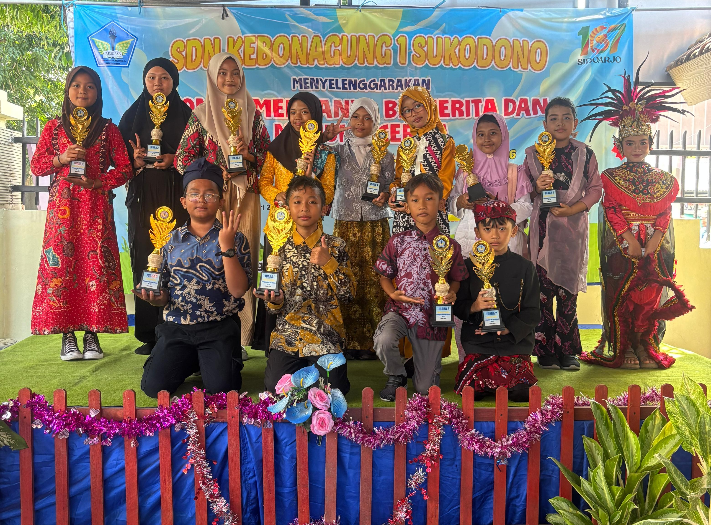
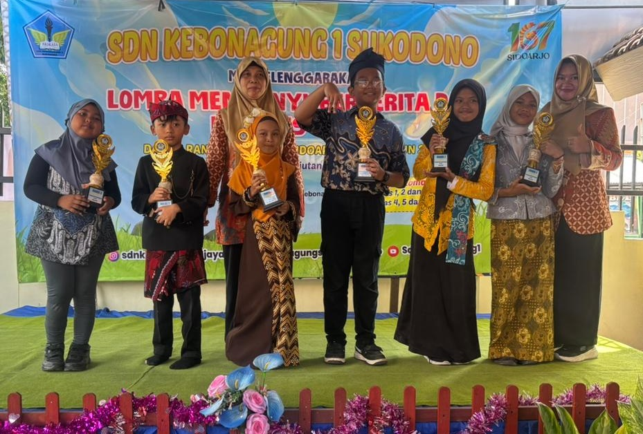

Sidoarjo, 31 Januari 2026 — Suasana penuh semangat dan keceriaan tampak di halaman SDN Kebonagung 1 Sukodono pada Sabtu pagi. Seluruh warga sekolah, mulai dari siswa, guru, hingga orang tua, berkumpul untuk memperingati Hari Jadi Kabupaten Sidoarjo ke-167 yang mengusung tema "Inklusif Berkelanjutan, Sidoarjo Tangguh." Kegiatan ini menjadi momentum penting bagi sekolah untuk menanamkan nilai-nilai cinta daerah, kebersamaan, dan semangat berprestasi kepada para peserta didik.
Acara dibuka dengan menyanyikan lagu Indonesia Raya yang dinyanyikan dengan penuh semangat oleh seluruh peserta. Setelah itu, Kepala Sekolah SDN Kebonagung 1 Sukodono, Mei Ernawati, S.Pd., M.Pd., memberikan sambutan pembuka. Dalam sambutannya, beliau menyampaikan rasa syukur atas terselenggaranya kegiatan ini dengan lancar serta mengapresiasi kerja keras seluruh panitia dan dukungan dari para guru dan siswa.
"Peringatan hari jadi ini bukan sekadar seremonial, tetapi juga menjadi sarana untuk menumbuhkan rasa bangga terhadap daerah dan memperkuat karakter anak-anak agar menjadi generasi yang tangguh dan berdaya saing."

Ragam Perlombaan Edukatif
Rangkaian kegiatan diisi dengan berbagai perlombaan yang menarik dan edukatif. Siswa-siswi dari berbagai jenjang kelas berpartisipasi dalam lomba bernyanyi, bercerita, menulis cerita, serta menggambar logo Sidoarjo. Setiap lomba dirancang untuk mengasah kreativitas, keberanian, dan kemampuan berpikir kritis anak-anak.
Suasana kompetisi berlangsung meriah namun tetap menjunjung tinggi sportivitas. Sorak-sorai dukungan dari teman-teman dan guru menambah semangat para peserta untuk menampilkan kemampuan terbaik mereka.
Motivasi dari Anggota DPRD
Salah satu momen istimewa dalam acara ini adalah kehadiran Vike Widya Asroni, S.M., anggota DPRD Kabupaten Sidoarjo, yang turut memberikan motivasi kepada para siswa. Dalam sambutannya, beliau menyampaikan apresiasi atas inisiatif sekolah dalam menyelenggarakan kegiatan yang sarat nilai pendidikan dan kebudayaan.
"Anak-anak SDN Kebonagung 1 Sukodono harus terus semangat belajar, berani bermimpi, dan berusaha menjadi generasi penerus yang tangguh. Sidoarjo membutuhkan anak-anak hebat yang mampu membawa perubahan positif di masa depan."
Penampilan Seni dan Budaya
Selain perlombaan, acara juga dimeriahkan dengan penampilan seni tari dari salah satu siswi, dan juga permainan angklung yang menghasilkan nada yang sangat indah. Penampilan tersebut menambah semarak suasana dan menunjukkan bakat luar biasa yang dimiliki oleh para peserta didik. Guru-guru turut berperan aktif dalam mendampingi dan memberikan dukungan moral kepada anak-anak selama kegiatan berlangsung.
Tari Tradisional
Permainan angklung
Penyerahan Hadiah

Pengumuman Pemenang
Menjelang akhir acara, diumumkan para pemenang lomba yang disambut dengan sorak gembira. Para pemenang mendapatkan piagam penghargaan dan hadiah sebagai bentuk apresiasi atas usaha dan kreativitas mereka. Namun, lebih dari sekadar kemenangan, kegiatan ini menjadi ajang pembelajaran berharga tentang kerja keras, kebersamaan, dan semangat pantang menyerah.
Harapan ke Depan
Dalam penutupan acara, Kepala Sekolah Mei Ernawati kembali menyampaikan harapannya agar kegiatan seperti ini dapat terus dilaksanakan setiap tahun.
"Semoga kegiatan ini menjadi inspirasi bagi seluruh warga sekolah untuk terus berinovasi dan berkontribusi dalam membangun Sidoarjo yang inklusif, berkelanjutan, dan tangguh."
Peringatan Hari Jadi Sidoarjo ke-167 di SDN Kebonagung 1 Sukodono tidak hanya menjadi perayaan semata, tetapi juga wujud nyata dari semangat kebersamaan dan kepedulian terhadap daerah. Melalui kegiatan ini, diharapkan lahir generasi muda yang mencintai tanah kelahirannya, berkarakter kuat, serta siap menghadapi tantangan masa depan dengan semangat Sidoarjo yang Tangguh.
Kembali ke halaman utama --->